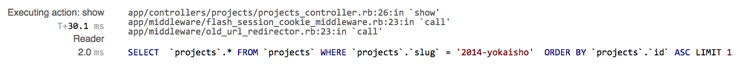
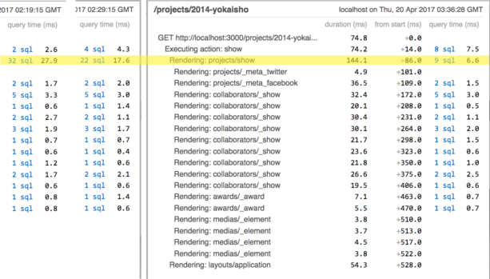

2.1 rack-mini-profiler
This gem helps you analyze where your Rails App spends time.

https://github.com/MiniProfiler/rack-mini-profiler
See RailsCast #368 for a good introduction.
The Mini Profiler only measures the server side: the time spent in the rails app to generate the webpage. So we need to compare the numbers Mini Profiler gives us to the 300ms threshold defined above.
4.3 Caching a Partial
If you look at the homepage of the demo you can see that the list of project under "Bachelorprojekte" is different every time you reload the page. There are 9 projects in all, but only 5 will be picked randomly and will be displayed.
If we want to keep this feature caching the whole homepage will not work: once the homepage is cached, a reload of the page will show the exact same page. The same five projects will appear on the homepage indefinetly.
We could change our expectations for the random display: We could decide that the same 5 projects should be shown for a whole day, and only on the next day new projects should be picked.
This would work for our example app. a second approeach would be
to not cache the whole homepage, but only the display of an individual project.
This means going down to the projects/_project partial, and caching that.
This second approach is useful not just for our "random projects". Think of the "activity stream" on the facebook hompage: it will look differently for each user, and each time the page is loaded. But it consists of smaller fragments which can be cached: the individual status message, or event, or photo can be reused.
4.3.1 Implementation
When you add the code for caching to the projects/_project view
make sure that you specify the correct object. If not, you might up
loading the same partial again and again:

If you implement it correctly each rendering of the partial should be faster now:

In Rails 5 you can speed up the rendering even more.
If you look at the fronts/show view you can see that the project partial
is rendered through a collection:
<%= render :partial => "projects/project", :collection => @samples[i] %>
In Rails 5 you can add caching here:
<%= render :partial => "projects/project", :collection => @samples[i], :cached => true %>
Now instead of fetching each partial from the cache one by one rails will do a multi-fetch, which is faster. But our example app is written in Rails 4, so this does not work yet.
See Deshmane(2016)
4.3.2 Side Effects
An unexpected side effect of caching the partial can be seen in the
edition view:
this view also uses the projects/_project partial, so it too will
profit from the caching.
4.4 Russian Doll Caching
In the previous step we implemented caching for the projects/_project partial,
which is also used in the editions/show view. Now let's add caching to this
view also:
<% cache @edition do %> ... <% end %>
This change will again speed up the display of the page:

But now we have problem: if we change one of the projects inside this edition, the cache for the partial would be recreated. But this never gets triggered, because the cache for the whole edition is still valid:
project = Project.find_by_title('Origin')
project.title = 'Orange'
project.save
If you reload the page now, you can still see the project named "Origin", not "Orange".
The problem here is a missing dependency: our cache entry only depends on the edition, not on the projects contained in the edition.
We can declare the full dependency by supplying an array of objects to the cache helper method:
<% cache [@edition,@edition.projects] do %> ... <% end %>
If you reload the page now, you can see that a much longer cache key is generated:
Write fragment views/editions/16-20160202125058000000000/projects/1622-20141216101932000000000 /projects/1658-20150601055523000000000/projects/1773-20170420014824000000000/projects/1835-20150604061050000000000/projects/1864-20150611174811000000000/projects/1872-20150603140238000000000/projects/1873-20150603084648000000000/projects/1879-20150606174629000000000/projects/2044-20161010124545000000000/e212725e51fc97160af625b6651e38b8
This key works for all changes in an edition:
- changing an attribute of the edition will change the
updated_atattribute also, and will change the key - changing an attribute of one of the projects will change the corresponding
updated_atattribute also, and will change the key - adding a new project to the edition will make the key longer
- removing a project from the edition will make the key shorter
In this example the title of one of the projects was changed: You can see in rack-mini-profiler that only one of the partials was recreated, all the other partials were loaded from cache. The next time the same page was rendered the edition cache was reused.

5.4 n+1 queries
When analysing the SQL queries a rails project generates you will often find this situation: you have a 1:n relationship, for example: a project has many users. When displaying the project with all of its users you see n+1 queries. In our example app this happens:
SELECT * FROM `projects` WHERE `slug` = '2014-yokaisho' ORDER BY `projects`.`id` ASC LIMIT 1 SELECT * FROM `projects_roles_users` WHERE `project_id` IN (1622) SELECT * FROM `users` WHERE `id` = 1033 LIMIT 1 SELECT * FROM `users` WHERE `id` = 1018 LIMIT 1 SELECT * FROM `users` WHERE `id` = 901 LIMIT 1 SELECT * FROM `users` WHERE `id` = 938 LIMIT 1 SELECT * FROM `users` WHERE `id` = 945 LIMIT 1 SELECT * FROM `users` WHERE `id` = 977 LIMIT 1 SELECT * FROM `users` WHERE `id` = 953 LIMIT 1 SELECT * FROM `users` WHERE `id` = 652 LIMIT 1 SELECT * FROM `users` WHERE `id` = 940 LIMIT 1
Here 9 users belong to the project. They are loaded using 9 requests. This is inefficient! If we were coding SQL by hand, we could get the same data using one query with a join.
We can use rack-mini-profiler to find the code line that generated the request:

In this example, the ActiveRecord method that generate the first request is in project_controller.rb, line 26
@project = Project.friendly.find(params[:id])
Later, in the view and partials, the relationships from @project to users is accessed.
To get ActiveRecord to automatically load all the users at once we can change this one line to use the 'includes' method:
@project = Project.includes(:users).friendly.find(params[:id])
After this change we find a lot less SQL requests:
SELECT * FROM `projects` WHERE `slug` = '2014-yokaisho' ORDER BY `projects`.`id` ASC LIMIT 1 SELECT * FROM `projects_roles_users` WHERE `project_id` IN (1622) SELECT * FROM `users` WHERE `id` IN (1033, 1018, 901, 938, 945, 977, 953, 652, 940)
This makes a measurable difference:

In this example there are many more models that belong to a project. If we include them all, we end up with a sizable reduction in SQL queries:
@project = Project.includes(:users, :roles, :assets, :urls, :tags).friendly.find(params[:id])

5.5 view
We still have many more SQL queries that are created
for the collaborators/_show partial.
The collaborator partial shows information about one team member: the thumbnail, the name, their degree program(s) and the role(s) they had in the project.

The information about the degree programs is found in 2 different tables:
- studycourses
- agegroups_studycourses_departments_users
To display "MMT Bachelor 2010, MMT Master 2014"
for Mr. Huber the helper method print_studycourses is used. We can try out this
helper method in the rails console:
> user = User.find(901) User Load (0.5ms) SELECT `users`.* FROM `users` WHERE `users`.`id` = 901 LIMIT 1 > ApplicationController.helpers.print_studycourses(user) Enrollment Load (0.5ms) SELECT `agegroups_studycourses_departments_users`.* FROM `agegroups_studycourses_departments_users` WHERE `agegroups_studycourses_departments_users`.`user_id` = 901 Studycourse Load (0.3ms) SELECT `studycourses`.* FROM `studycourses` WHERE `studycourses`.`id` = 3 LIMIT 1 Agegroup Load (0.4ms) SELECT `agegroups`.* FROM `agegroups` WHERE `agegroups`.`id` = 3 LIMIT 1 Studycourse Load (0.4ms) SELECT `studycourses`.* FROM `studycourses` WHERE `studycourses`.`id` = 5 LIMIT 1 Agegroup Load (0.4ms) SELECT `agegroups`.* FROM `agegroups` WHERE `agegroups`.`id` = 19 LIMIT 1
Here information from three database tables is combined.
5.5.1 createing a database view
In the database console we can build a simple select statement with two joins to get the same information:
mysql> SELECT user_id, concat(studycourses.name, ' ', year) AS name FROM agegroups_studycourses_departments_users x LEFT JOIN studycourses ON (x.studycourse_id=studycourses.id) LEFT JOIN agegroups ON (x.agegroup_id=agegroups.id) WHERE user_id=901; +---------+-------------------+ | user_id | name | +---------+-------------------+ | 901 | MMT Bachelor 2010 | | 901 | MMT Master 2014 | +---------+-------------------+ 2 rows in set (0,01 sec)
We can create a view in the database that contains this information:
mysql> CREATE VIEW degree_programs AS SELECT user_id, concat(studycourses.name, ' ', year) AS name FROM agegroups_studycourses_departments_users x LEFT JOIN studycourses ON (x.studycourse_id=studycourses.id) LEFT JOIN agegroups ON (x.agegroup_id=agegroups.id); Query OK, 0 rows affected (0,06 sec)
This view can now be used like any other table in the database:
mysql> SELECT * from degree_programs WHERE user_id=901 ; +---------+-------------------+ | user_id | name | +---------+-------------------+ | 901 | MMT Bachelor 2010 | | 901 | MMT Master 2014 | +---------+-------------------+ 2 rows in set (0,00 sec)
5.5.2 model and relationships for the view
In Rails we can define a model for this view:
app/models/degree_program.rb
class DegreeProgram < ActiveRecord::Base
belongs_to :user
def to_s
name
end
end
And add a relationship from user:
class User < ActiveRecord::Base ... has_many :degree_programs
back in the rails console we can now use this new model:
> user = User.find(901)
User Load (0.5ms) SELECT `users`.* FROM `users` WHERE `users`.`id` = 901 LIMIT 1
> user.degree_programs.join(', ')
DegreeProgram Load (0.6ms) SELECT `degree_programs`.* FROM `degree_programs` WHERE `degree_programs`.`user_id` = 901
=> "MMT Bachelor 2010, MMT Master 2014"
And finally we can refactor the helper method print_studycourses
def print_studycourses(student)
student.degree_programs.join(', ')
end
This reduces the number of SQL statements to one per collaborator partial:

5.5.3 create view in production
To deploy the view to production, you need to create it with a migration:
class CreateViewDegreeProgram < ActiveRecord::Migration
def up
execute <<-SQL
CREATE VIEW degree_programs AS
SELECT user_id, concat(studycourses.name, ' ', year) AS name
FROM agegroups_studycourses_departments_users x
LEFT JOIN studycourses ON (x.studycourse_id=studycourses.id)
LEFT JOIN agegroups ON (x.agegroup_id=agegroups.id)
SQL
end
def down
execute 'DROP VIEW degree_programs'
end
end
5.5.4 uses and limitations of view
In this case the view might be a first step towards refactoring the database. We just have too many tables in the database that are not really needed.
We can rewrite the rails app step by step to use only the new view, and not the database tables it is supposed to replace. after we have changed all the rails code, we can drop the view, and create a table with the same data instead. Then we can drop the original tables and are finished with the database refactoring.
In other cases you might use a view permanently: If you need both the underlying, more complex data, and the simplified data in the view. Reports with aggregated data, top 10 lists, queries that use complex database expressions, or tables with a reduced set of attributes would be good examples for using a view.
For data that is accessed a lot, but changes very seldom, you can us a materialized view. In a normal view each access to the view triggers the underlying sql requests. In a materialized view the data is copied over to the view once. This needs more memory, but gives faster access.